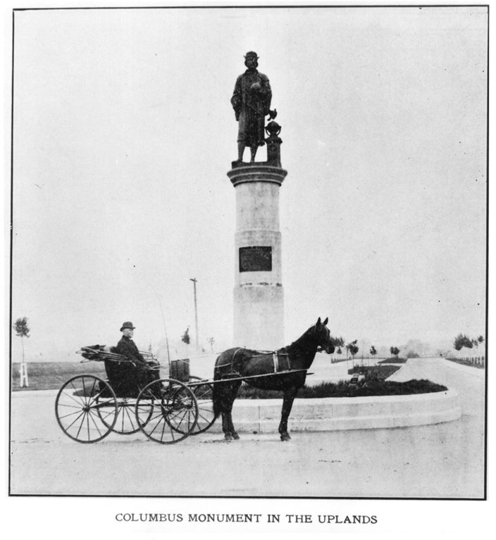

Founded 1902
The story of
The Uplands
“It is a nice name—The Uplands—breezy-like and suggestive of height and clear sweep. It fits the Briggs plat as comfortably as an old pair of shoes.”The Peoria Star, June 6, 1902

The start of an idea
O. L. Woodward and S. L. Briggs of Toledo, Ohio, along with their partners, entered negotiations for land near Bradley Polytechnic Institute known as the Bradley Farm. The November 14, 1901, Peoria Journal reported that they expected to improve it with asphalt streets, cement sidewalks, and other beautification for a fine suburban residential addition.
A connection to the city
The Briggs Company petitioned the City Council to bring the plat within the city limits, contingent upon the Central Railway extending its tracks along Main Street to the new subdivision.
Infrastructure before lots
Briggs described a plan for approximately 83 acres. Lots would not be offered until paving and sewer work were complete. Main Street was to be paved with brick as far as Western Avenue, and approximately 2,000 trees were to be planted.
The company did not plan to build houses itself. Its role was to prepare and beautify the land, complete the public improvements, and then sell finished residential lots.
A place to call home
With improvements underway, Briggs announced a naming contest with a prize of $50 in gold. The judges reviewed more than 4,000 suggestions before selecting “The Uplands,” submitted by Mrs. William Ker.
The Peoria Herald Transcript praised the name as euphonious, memorable, and elevating. Mrs. Ker donated her prize money to the Bradley Home for Aged Women.
The progress continues
Briggs suggested that Lydia Bradley, who had donated the original Bradley Park land, give an additional tract adjoining the Uplands to the Park Board. The Peoria Herald Transcript described the gift as 40 acres of hill and valley extending from Bradley Park toward University Street, from Parkside Drive on the north side of the Briggs plat to the bluff above Dry Run Creek.

Standing the test of time
Peoria’s Christopher Columbus statue was one of several identical sheet-copper works designed by sculptor Alfons Pelzer and manufactured by the W. H. Mullins Company of Salem, Ohio. An identical statue stood at the Cold Storage Building during Chicago’s 1893 World’s Columbian Exposition. Other examples dedicated in 1892 stood in New Haven, Connecticut; Phillipsburg, New Jersey; and Columbus, Ohio. The fate of an example displayed at Atlanta’s 1895 Cotton States and International Exposition was not known to the legacy researchers.
The Briggs Real Estate Company gave Peoria’s statue, dedicated October 15, 1902. It originally stood at Columbia Terrace and Institute Place. Deemed a traffic hazard in 1946, it was removed from the intersection and rededicated near Columbia Terrace and Parkside Drive in Laura Bradley Park on October 12, 1947. It was renovated and rededicated again in 1960 and 1984.
The statue was removed in 2020. Its history is retained here because it formed part of the neighborhood landscape for more than a century; retaining the record does not require restoring the monument or overlooking the wider history of the land.

The sale begins
At 9:00 a.m. on October 22, 1902, one week after the statue’s dedication, the sale of 400 lots began. Of these, 370 were offered as syndicate shares at $1,085 each; 30 “star” lots were reserved for private sale. By 9:30 a.m., 184 lots had sold. The total reached 242 by 10:30, and approximately two-thirds of the entire plat had sold by 5:00 p.m.
Owners of syndicate shares had to wait for the shareholders’ division before building. Purchasers of the privately sold star lots could begin immediately.
The first occupied residence
The Peoria Herald Transcript identified Mrs. Adda Heyle as the first resident of the new addition. Parr and Huslebus designed her $8,000 two-flat with hardwood floors and hot-water heat. Mrs. Heyle intended to occupy the lower flat and rent the upper floor. The house still stands at 1025–27 North Elmwood Avenue.
Lots assigned by drawing
The shareholders’ division meeting took place in the Grand Opera House. Names and syndicate certificates went into one churn and deeds with lot numbers into another. One envelope was drawn from each, pairing every shareholder with a lot.
Michael Conlon received what was considered the most valuable parcel: Lot 1, at the northeast corner of Parkside Drive and Columbia Terrace.

Planning for future generations
Following the division meeting, The Peoria Journal described a steady stream of visitors coming to the Uplands to inspect their lots. The Briggs Company, meanwhile, was already considering its next residential development in Des Moines, Iowa.
The Park Board worked to complete Bradley Park’s Main Street entrance with a graveled drive between rows of catalpa trees and geometric flower beds. Poplars were planted along the park side of Parkside Drive. A summer house was planned at the west end of Columbia Terrace, although the legacy researchers found no evidence that it was ever built.
A tradition of collective stewardship
The Uplands Improvement Association was established in May 1903 and was identified by the legacy researchers as Peoria’s first neighborhood homeowners association. The Uplands Residential Association continues that tradition of caring for shared spaces, communicating across blocks, and organizing around common concerns.
The neighborhood sits south of Interstate 74 and the National Center for Agricultural Utilization Research. It is bounded by Main Street and Bradley University to the south, University Street to the east, and Parkside Drive and Laura Bradley Park to the west.
Over the years, Uplands residents have included a Minority Leader of the United States House of Representatives, an Illinois state representative, a Bradley University president, an Illinois attorney general, and many other people who distinguished themselves locally, nationally, and internationally.
A newer chapter in the landscape
Upper Laura Bradley Park is now home to Never Extinct: A Pictorial History of Indigenous People, a bronze work by Peoria sculptor Preston Jackson honoring the Indigenous peoples connected to the Illinois River Valley. The Peoria Park District dedicated the sculpture on March 20, 2026.